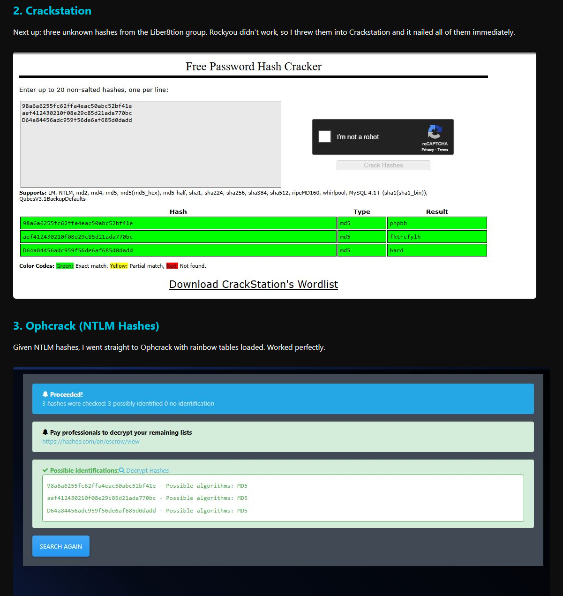
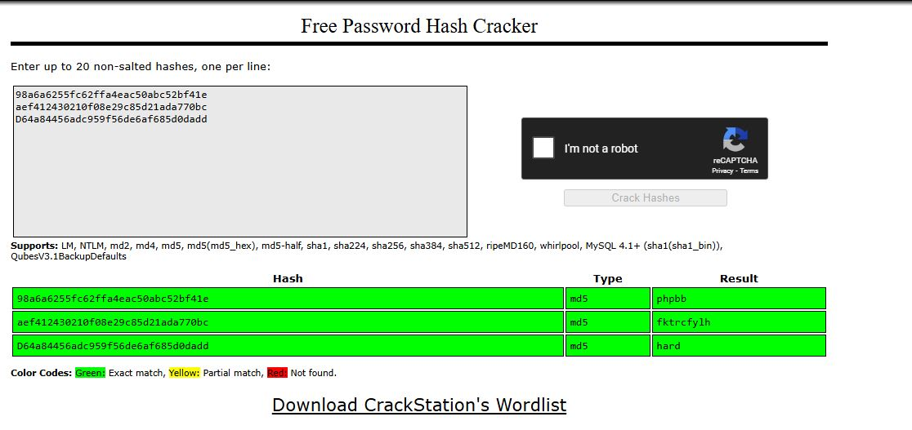
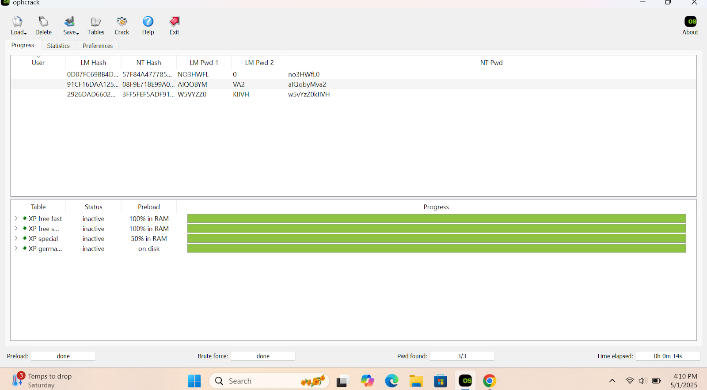
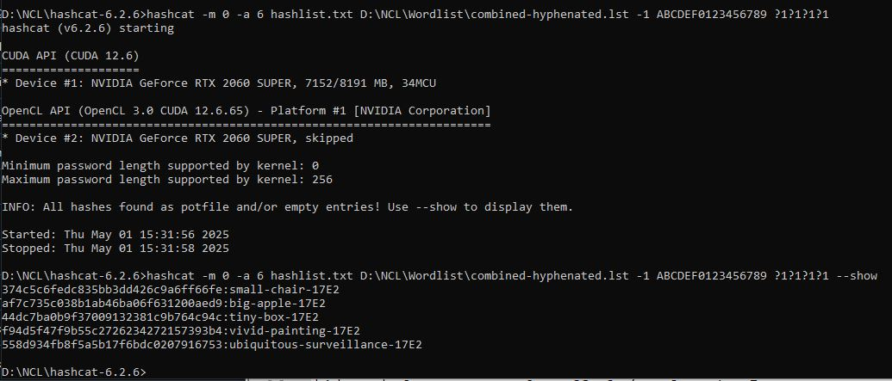
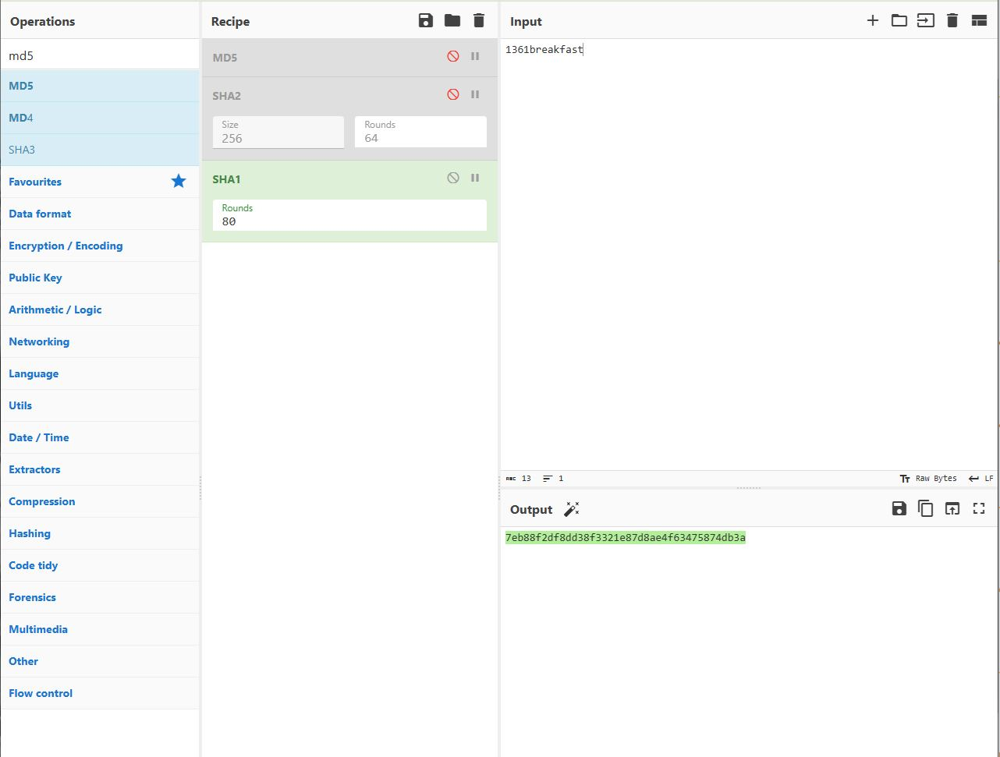
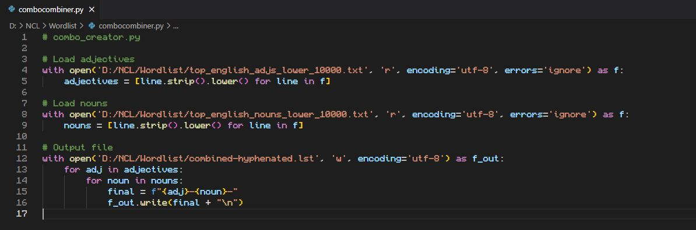

This challenge had a bit of everything — from simple hash lookups to full-blown brute-force mask attacks. Here’s how I tackled it step by step.
We were given plaintext passwords and asked to convert them into hashes.
covered9595diced → 936a23a0909747349f45b71d7e3d23c9617wafflehouse316 → 70366cd0e8e8119dd49c80ae7af9cbef9e52d3a1c7497825b222aa7bae9d82181361breakfast → 7eb88f2df8dd38f3321e87d8ae4f63475874db3aWe received unknown hashes from the Liber8tion group. Rockyou didn’t work, so I ran them through Crackstation and an online hash identifier.


For NTLM hashes, I used Ophcrack with rainbow tables. All passwords were recovered successfully.

This challenge gave us a format:
1 uppercase + 3 lowercase + 4-digit year (1980–2025) + 1 special character
I originally tried dictionary + year mask... mistake. The challenge name "Crunch Time" was the real hint — full mask was needed. (Shoutout Andy.)
hashcat -m 1000 -a 3 hashlist.txt -1 !@#$%^&*()-_=+[] ?u?l?l?l19?d?d?1
Eventually cracked with: Tmzt2025!
Format was:
adjective-noun-last4MAC
I made a big mistake at first — tried to brute force word combos from scratch. That hit 50 GB fast. Ended up using a GitHub list of top adjectives/nouns and wrote a quick Python combiner.

hashcat -m 0 -a 6 hashlist.txt combined-hyphenated.lst -1 ABCDEF0123456789 ?1?1?1?1
Cracked them in no time.


Final Thoughts: Always read the challenge title. Don’t waste time wordlisting when the pattern is brute-forcible. And again: shoutout Andy 🫡